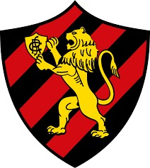

Sport

</html><!DOCTYPE html>
<html lang="pt-BR">
<head>
    <meta charset="UTF-8">
    <meta name="viewport" content="width=device-width, initial-scale=1.0">
    <title>Saiba mais sobre seu time</title>
    <link href="https://fonts.googleapis.com/css2?family=Poppins:wght@400;600&display=swap" rel="stylesheet">
    <style>
        body {
            font-family: 'Poppins', sans-serif;
            margin: 0;
            padding: 0;
            background-color: #E1F5D1;
            color: #4A8C4A;
            display: flex;
            justify-content: center;
            align-items: center;
            height: 100vh;
        }

        .container {
            display: flex;
            width: 80%;
            max-width: 900px;
            background-color: #FFF;
            border-radius: 8px;
            box-shadow: 0 4px 8px rgba(0, 0, 0, 0.1);
            overflow: hidden;
        }

        .image-section {
            flex: 1;
            background-color: #ffffff;
            display: flex;
            align-items: center;
            justify-content: center;
            padding: 20px;
        }

        .image-section img {
            max-width: 100%;
            border-radius: 8px;
        }

        .text-section {
            flex: 2;
            padding: 30px;
        }

        .text-section h1, .text-section h2 {
            margin: 0 0 10px 0;
            font-size: 20px;
            color: #000000;
        }

        .text-section p {
            margin: 0 0 20px 0;
            font-size: 16px;
            line-height: 1.6;
            color: #000000;
        }
    </style>
</head>
<body>
    <div class="container">
        <div class="image-section">
            
        </div>
        <div class="text-section">
            <h1>Sport</h1>
            <p>

                O Sport Recife vive um momento de festas, tendo conquistado recentemente o acesso à Série A do Campeonato Brasileiro. A vitória contra o Santos na última rodada da Série B garantiu o retorno do clube à elite após três anos de ausência. Sob o comando do técnico Pepa, a equipe apresentou um desempenho sólido no segundo turno, com destaque para jogadores como Lucas Lima e Barletta, que tiveram papéis decisivos na campanha.

                O tempo já começa a planejado para a próxima temporada, focando na manutenção e reforço do elenco para competir no Brasileirão 2025. A torcida, conhecida pelo apoio fervoroso na Ilha do Retiro, também comemora as conquistas e espera um desempenho competitivo no próximo ano, tanto no âmbito nacional quanto regional.
                
            
                </p>
            <h2>Classificação</h2>
            <p>O Sport é o atual terceiro colocado da Série B</p>
        </div>
    </div>
</body>
